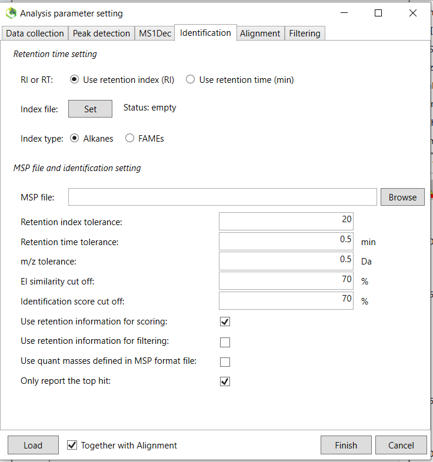
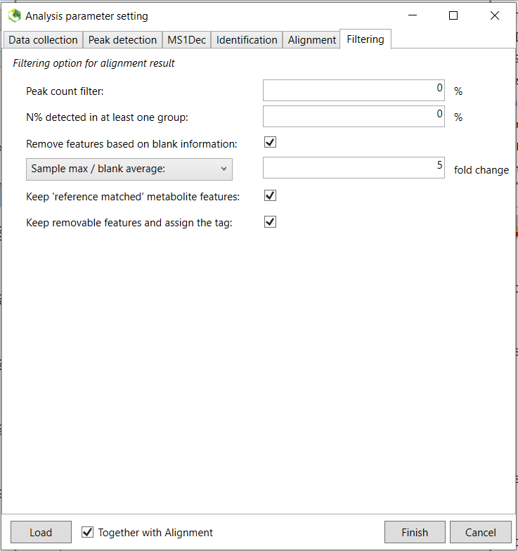

13 MTM HRMS Library: GC-HRMS
This tutorial is based on the research paper by Price et al (Open, High-Resolution EI+ Spectral Library of Anthropogenic Compounds, Frontiers in Public Health, 2021, DOI=10.3389/fpubh.2021.622558).
This tutorial will guide you through the different steps to export the spectra information for each compound from a standard to contribute to the MTM HRMS spectral library. The overall goal is to analyze chemical standards to generate spectral fingerprints so we can combined all spectra of different standards into one spectral library. This can then be used as a suspect list which we can use to match any unknown compounds. This is a very common concept within GC screening, and the most commonly used spectral library is the NIST which has more than 100,000 compounds. The main drawback of NIST is that most of the GC spectra was recorded with nominal mass resolution. This makes spectral matching uncertain and false positives are common. The use of HRMS can reduce the uncertainty in spectral matching as well as provide clean deconvoluted spectra for real samples thus greatly reduce false positives and false negatives.
To build the spectral library, we first start with the raw data file from the HRMS analysis of a standard (.raw for Thermo, etc) and then we want to generate an .msp file as the final file format. The msp file is a file format developed by NIST to store mass spectral data. For more information about this format, please see this document. Here, we use a slightly different format commonly called “RIKEN MSP”, but both can usually be used for most software that read msp files (although if you get error then different .msp formats could be a reason).
The overall goal can be seen in Figure @ref(fig:combineMSP)
If compounds were analyzed using GC, then you also need to include an alkane mix to be able to calculate the retention index (RI). In our lab, we use a mix consisting of C7-C40 alkanes. Ask Thanh for the alkane mix. You can find some representative chromatograms with retention times of the alkane mix for a 30 m DB-5ms column in the file “/MTM_HRMS_LIB/MSDIAL_PROJECT/MSDIAL_params/AlkaneMixRT.pptx”. If you are using a new GC method or new column, then it is recommended to also run an odd alkane chain standard to specifically identify the alkanes in the C7-C40 mix. The metabolomics lab has an C11-C25 odd alkane mix we can use. Alternatively, you can run standards with compounds of known RI, which enable you to check if the retention time for alkanes have been correctly picked.
A solvent blank also needs to be analyzed together with the standards in order to subtract any blank signals at a later stage.
The main steps of this procedure can be seen in below Figure @ref(fig:diagramSpeclib).
General workflow for spectral library
The project is organized in different subfolders within the main folder folder named “MTM_HRMS_LIB”. Do not change the name of any folders. The template folder for the spectral library is organized as follows:
MTM_HRMS_LIB
│ MTMxxxxx_GC-EI-FT_POSITIVE.xlsx
| MTMxxxxx_LC-ESI-QTOF_POSITIVE.xlsx
│ ..
└───0_Main_Lib
│ │ MTM_HRMS_MAINLIB.xlsx
│ │ ..
│
└───1_Standard_infosheets
│ │ MTM00001_GC-EI-FT_POSITIVE.xlsx
│ │ MTM00002_GC-EI-FT_POSITIVE.xlsx
| | ..
│
└───2_mzML_data
│ └───GC_CI_NEG_HRMS
│ └───GC_CI_POS_HRMS
│ └───GC_EI_HRMS
| └───LC_ESI_NEG_HRMS
│ └───LC_ESI_POS_HRMS
|
└───3_MSP
│ │ MTM00001_GC-EI-FT_POSITIVE_IASLDLGGHXYCEO-HWKANZROSA-N.msp
│ │ MTM00002_GC-EI-FT_POSITIVE_UPMLOUAZCHDJJD-UHFFFAOYSA-N.msp
│ │ ..
│
└───4_Massbank
│ │ MTM00001.txt
| | MTM00002.txt
| | ..
│
└───MSDIAL_PROJECT
| └───MSDIAL_params
|
└───R
| MTM_HRMS_database.Rmd
The main folder (MTM_HRMS_LIB) contain some template info sheet that needs to be filled to provide information about the chemical standard and the analysis method. The MTM id number (MTMxxxxx) for each standard infosheet is in numeric order and must contain 8 character in total (e.g. MTM00001). Check the MTM_HRMS_MAINLIB.xlsx for the latest id number and use the next one as the new MTM id.
INSTALL REQUIRED SOFTWARE
Several software and packages are needed to generate the spectra library. All are open access and free to use for academic purposes.
- Proteowizard: We mainly use MSConvert which is bundled in the Proteowizard software package and you can download it here.
- MS-DIAL: used to analyze the mzML file and generate spectra. Download the latest version here. No installation is necessary so you only need to extract the downloaded zip file to your folder of choice.
- MS-FINDER: used to annotate the individual peaks in the spectrum and export to msp file. No installation is necessary so you only need to extract the downloaded zip file to your folder of choice.
NOTE: MSDIAL could crash when starting a new project. One fix could be to change the system langugage of Windows to English.
13.1 Analyze the standards using HRMS
It is recommended to analyze single standards but mixtures are also feasible to analyze if the analytes are not coeluting too close to each other. The deconvolution algorithm of MS-DIAL is able to distinguish between two peaks that are closely eluted but still have slightly different retention times and peak shapes. Around 1 ppm is sufficient to get a good peak shape and ion intensities in the GC-orbitrap HRMS, but this depends of course on each specific compound. If you don’t see any peaks, then check if there is any solubility issues or that the analytes are GC compatible (boiling point, polarity,..).
You should also inject a solvent blank to perform blank subtraction later in MS-DIAL.
13.2 Convert the raw data file from GC-HRMS analysis to .mzML using MSconvert (For unifi conversion, see section @ref(MSConvertGC)
Follow the steps in section @ref(MSConvertGC)
13.3 Fill in the standard infosheet
In the main folder, choose one of the standard information sheets depending on whether you used LC or GC and the ionization mode. The content of the information sheet looks slightly different depending on LC or GC. Copy the chosen infosheet to the “1_Standard_infosheets” folder. In that folder, rename the copied infosheet to the new MTM id as mentioned in previous section.
The infosheet is organized in accordance to the format used by Massbank Europe. A description on the Massbank record format can be found here. It is important that you do not change any of the titles in the first column in the infosheet, as the format requirement is quite strict. Also, try not to copy text from one cell to another as it might change the underlying format of the cells (if you think you made an error, copy the template and redo again).
The rows that are in bold are information that are mandatory to fill in.
The “ACCESSION” row is the MTM id.
The “RECORD_TITLE” will be automatically generated based on the information you filled in so you should not fill this row.
“COMMENT: centroided mzML file name” is for internal purposes and refers to the name of the mzML file you converted and copied to the “MTM_HRMS_LIB/2_mzML_data/../” folder.
“COMMENT: msp file name” is automatically generated and will be used later to name the msp file.
“COMMENT: CONFIDENCE” refers to how confident you are of the identification of your standard according to the “Schymanski scale”. Leave it as “Reference Standard (Level 1)”, unless there are standards where you cannot distinguish or identify between different isomers in a standard. In this case, you should use “Level 3”. An example is “Technical mixture (Level 3)”, where we analyzed a technical standard (usually <90% purity) and several isomeric peaks can be seen in the chromatogram. In this case, I usually individually register each isomer in its own infosheet (spectral peak patterns will look very similar with slight differences and retention time is different).
“COMMENT: QUANTMASS”. This is the quantification mass for MSDIAL to find for EIC of model ions to compare different samples and groups. Choose the monoisotopic ion if possible or the highest peak at the higher end of the mass range. Copy this m/z directly from the msp file so the decimals matches.
“CH$NAME:” occurs twice which means you have to input two different names for the compound in the standard, because a compound can have different names. It could be the common name specified in PubChem, the IUPAC name, trade name or the abbreviation.
“CH$IUPAC” is the InChI and always starts with “InChI=”. You can find all these information for the compound by searching in PubChem.
For GC compounds, you also need to fill in the COMMENT: QUANTMASS, AC$CHROMATOGRAPHY: KOVATS_RTI and AC$CHROMATOGRAPHY: RETENTION_TIME. These will be made available later in MS-DIAL.
The other rows should be quite straightforward to fill in. If you use the same method for many standards, then you can save a copy of an infosheet to use as a method template, while only updating information for each specific compound: ACCESSION, DATE, COMMENT: centroided mzML file name, CH$NAME, CH$NAME, CH$FORMULA, CH$EXACT_MASS:, CH$SMILES:, CH$IUPAC:, CH$LINK: CAS, CH$LINK: INCHIKEY
The AC$CHROMATOGRAPHY: RETENTION_TIME row will be obtained later using MS-DIAL.
Now that you have filled in most information about the compound, we can proceed to process the mzML file to extract the spectra using MS-DIAL (although you can also first process the mzML files and then fill in the information afterwards).
13.4 Use MS-DIAL to perform spectral deconvolution and generate spectra for each compound
The graphical user interface of MS-DIAL takes some time to get used to since it is centered around detected peaks. It is important that you choose the correct parameters in the beginning since the parameters can affect the peak detection and alignment, or else you need to redo the data preprocessing again which could take long time if you are analyzing a lot of samples. When you run a large number of real samples, it is recommended to first optimize the parameters using e.g. QC samples. In this case where we analyze standards, then the default parameters with some instrument specific parameters can be used. These are found in the subfolder MSDIAL_PROJECT/MSDIAL_params/. If you want to know more details about data processing using MS-DIAL, please check the MS-DIAL online tutorial.
The below steps are based on the workflow for GC-EI orbitrap data described by Price et al..
1. In the File menu, start a new project. You must choose a file path where the mzML file(s) are located. When the data analysis is finished, several files associated with the analysis is created in the same folder. Depending on GC or LC analysis, then different parameters needs to be selected. Below Figure @ref(fig:MSDIALStartup) shows parameters for GC analysis. GC-EI is a hard ionization and we also centroided the mzML file so these paramters needs to be specified.
Click on the “Advanced: add further meta data” tab. The information for different instruments in our lab can be found in the file “/MTM_HRMS_LIB/MSDIAL_PROJECT/MSDIAL_params/Metadata.txt”. If your instrument is not present then you can input these by yourself. This metadata is optional but the information will be added to the msp file later so please fill this in.
When you are finished, click on next.
2. Click on the browse button and then you will select the files to process. The default file format is .abf but we want to process .mzML so choose this file format instead. You will now see the mzML file(s) in your working directory. If you want to process multiple files use Shift/Ctrl + select. Make sure your standards are designated as “Sample”. You should include a solvent blank which will be designated as “Blank”. The other columns are for post processing and not important for this spectral database workflow. You can learn more about these in the tutorial.
Click on next to the Analysis parameter settings.
3. The following instructions are for GC-EI orbitrap data, but the other processing methods are similar. Click on the “Load” button and select the “GC_EI_Orbitrap.med2” (for GC-EI-orbtrap files) file located in the “/MTM_HRMS_LIB/MSDIAL_PROJECT/MSDIAL_params/” folder. This will load the preset parameters for this instrument. You can set the parameters that are suitable for your specific analysis. Click on the “Advanced” tab and you can also choose how many samples (threads) to process in parallel. Continue with the “Peak detection” tab and set an appropriate minimum peak height. This is instrument specific and also depends on the concentration of the analytes. If the “Accurate MS” box is not checked, then select it. Below Figure @ref(fig:MSDIALPeakdetection) shows the parameters for the GC-EI orbitrap. The smoothing levels and width can be set as 3 and 10 respectively for GC analysis.
Continue to the “MS1Dec” tab.
4. The sigma window value is an important parameter which determines the efficiency of the deconvolution algorithm. The parameter depends on the instrument and Figure @ref(fig:MSDIALMS1Dec) shows the recommended ones for the GC orbitrap analysis of standards. From the online tutorial: “The sigma window value is highly affected by the resolution of deconvolution. A higher value (0.7-1.0) will reduce the peak top resolutions, i.e. the number of resolved chromatographic peaks will be decreased. On the other hand, a lower value (0.1-0.3) may also recognize many noise chromatographic peaks. In addition, you may set a cutoff value to reduce the MS noises (see Section 3-3 of Chapter 3 of the online manual). This is the same as LC/MS part.”
Continue to the “Identification” tab.
5. If you process GC data, we mainly want to “Use retention index (RI)”. If the below “Set” button cannot be clicked, then first click on the “Use retention time (min)” button and the back again to the “Use retention index (RI)” button and then you will be able to click on the “Set” button next to the Index file (Figure @ref(fig:MSDIALIdentification)). The “Index type” should be set to “Alkanes” since we analyzed an alkane mix. If you are using LC, then you should choose “Use retention time (min)”, since no retention index mix is used (yet). After you clicked the Set button, you will then choose a retention index file that include the retention time (in minutes) of the different alkanes in the mixture. A template of how the format should be can be found in the file “/MTM_HRMS_LIB/MSDIAL_PROJECT/MSDIAL_params/xxxxxx_RTI_MSDIAL.txt”. Adjust the retention time depending on your specific analysis after checking the chromatogram of the alkane mix. An example of the retention times of alkane mix can be found in the “/MTM_HRMS_LIB/MSDIAL_PROJECT/MSDIAL_params/AlkaneMixRT.pptx” file. After you chosen the RTI file, right click on the mouse on the cell and choose autofill.

The other parameters are not important for this standard library generation workflow and you can click on the “Alignment” tab. The purpose of alignment is to align all individual samples so the retention times for the same for the same compound between all samples. This is because the chromatographic retention time will slightly change between runs and batches and needs to be aligned for downstream data processing. You do not need to pay attention to this tab for the spectral library purpose. continue to the last tab “Filtering”.
Select the “Remove features based on blank information”and choose 5 fold change. This will remove any features that are lower than five times the blank samples (solvent blank in this case).

Now you are done and click on “Finish”. Sample processing might take a while depending on the processing power and the number of samples.
After the peak detection and deconvolution process has finished, you should see below screen.

Double click on the sample name where your standard was analyzed (see 1 in Figure @ref(fig:MSDIALSample)). Your screen will be switched to the “Peak spot viewer” tab. Each detected component will be seen as a downward pointing triangle (see 2 in Figure @ref(fig:MSDIALSample)). You should zoom in to the peak by moving you pointer to below the x-axis and scroll to zoom in the retention time axis (3). You should now be able to see the peak more clear and click on the peak as seen in 4 in Figure @ref(fig:MSDIALPeak).

You can then see the EIC (5) of the chosen peak to check if the peak shape is good. The extracted spectrum is shown in (6), and the retention time and retention index can be seen in (7). This is the deconvoluted spectrum and you can see the peak shape of the ion fragments with the highest intensities by choosing the “EI chrom” tab (8) which allows you to see if the deconvolution process has been successful (9). A note here is that the EIC shown in (5) is usually for the most intense spectral peak in the deconvoluted spectrum. When you feel that the quality is satisfactory, then you can export the spectrum to MS-FINDER by clicking on the “MS FINDER search” button (10).

ADD INFO ABOUT MS-FINDER PARAMETERS
In the new MS-FINDER window, go to “Settings” -> “Parameter settings”. In the “Methods” tab, check the “Formula prediction..” and “Use internal experimental..” options. The rest should be unchecked. Other parameters are:
Basic tab -> Mass tolerance type (ppm), Mass tolerance MS1 and MS2 (5 ppm), Relative ab cutoff (1%) to further remove background noise.
Formula finder -> check “Lewis and Senior check”, check all elements suitable for your compounds.
Structure finder -> tree depth (2), check “Use the fragmentation library for EI”.
Fill in the information in (10) in Figure @ref(fig:MSFINDER) for your compound. For GC-MS, in most cases the monoisotopic peak (somewhat equivalent to the precursor ion in LC mode) is not present and you can choose the fragment ion closest to the monoisotopic mass as the “precursor m/z”. Then choose the precursor type. For GC-EI-MS: choose [M]+. (M plus dot). After you are done, select “Fragment annotation (single)” in the “Analysis” menu (11). Afterwards, select the “Fragment annotation (batch job)” under the same menu. The in silico annotation of the fragment ions should now be calculated (12) and you can thereafter export the annotated spectrum as an “.msp” file (see 13). Copy and paste the file name that was generated in the standard infosheet you find at the “COMMENT: msp file name” row. Save the file in the “3_MSP” subfolder.
Open and check the .msp file by right click and open with e.g. Notepad (dont double click as .msp is also a program installation format in Windows).
NOTE: if you have processed other files in MS-FINDER before this (these will show in the “File navigator” tab), then these are all saved into the same msp file. You can either delete the old ones at the subfolder “MS-FINDER xxx/MSDIAL_TEMP/” before you process the standard, or you can manually delete the other compounds in the generated msp file.
NOTE: Sometimes MSFINDER will also include peaks that have much higher m/z values than the monoisotopic peak and its isotopic peaks. This is due to interferences that MSDIAL could not deconvolute. In this case, you can open the .msp file and manually delete the rows with the m/z and intensity of these peaks. YOU NEED ALSO TO UPDATE THE Num Peaks: row in the .msp file since you have now deleted some peaks. Also make sure that there is two empty rows at the end of the .msp document.
Now you are finished with generating the msp file for your standard spectrum.
You can also fill in the missing information in the infosheet: COMMENT: QUANTMASS, AC$CHROMATOGRAPHY: KOVATS_RTI and AC$CHROMATOGRAPHY: RETENTION_TIME. The COMMENT: QUANTMASS is the representative mass of the standard analyte which MSDIAL will use to quantify and compare amongst different samples. If this is not indicated then MSDIAL chooses the base peak (or the silanized peaks based on parameters choosen) and these are not always representative for the analytes. Importantly, if the monoisotopic peak is present in the spectrum at a fairly high abundance (even if it is not the highest intensity peak), then this should be chosen as the COMMENT: QUANTMASS instead of the base peak.
Send the newly created files to Thanh:
- Individual infosheet(s)
- mzML file(s)
- msp file(s)
The mainlib excel file as well as the combined msp file will be updated on a regular basis or upon request.
The final msp file will look something like below (not including the ## sign). A note is that the retention index is not included by MS-FINDER when you export to msp file. This will be later automatically added to the combined database based on the retention index value in the infosheet for the specific standard (at the “AC$CHROMATOGRAPHY: KOVATS_RTI” row). Therefore, it is important to check that all files have consistent MTM IDs for the same measured compound.
NAME: 1-Methoxy-4-(4-propylcyclohexyl)cyclohexane
SCANNUMBER: -1
RETENTIONTIME: 16.66233
RETENTIONINDEX: 1815
PRECURSORMZ: 208.20927
PRECURSORTYPE: [M]+.
IONMODE: Positive
SPECTRUMTYPE: Centroid
FORMULA: C16H30O
INCHIKEY: JMOYCPSDEMHCFG-UHFFFAOYSA-N
INCHI:
SMILES: CCCC1CCC(CC1)C2CCC(CC2)OC
AUTHORS: Wang T. et al. MTM Research Centre, Orebro University
COLLISIONENERGY: 70
INSTRUMENT: Q Exactive GC Orbitrap GC-MS/MS
INSTRUMENTTYPE: GC-EI-FT
IONIZATION:
LICENSE: CC BY
COMMENT:
Num Peaks: 80
55.05424 163078256
56.05759 11327176
57.06988 37068584
58.04133 10225466
59.04913 3163828
65.03855 26553580
66.04638 22100750
67.05419 693562624
68.05755 51898152
69.06983 236269520
70.07317 13133868
71.04909 151444288
72.05691 29205364
73.06474 2747695
77.03854 93605232
78.04638 61790368
79.05419 573201216
80.062 208521232
81.06983 1302587392
82.06878 1987492
82.07762 529499328
83.08546 265512848
84.08884 14965608
85.10112 10732988
91.05418 114294912
92.06201 22463942
93.06986 327123712
94.07767 117894488
95.04905 4559664
95.08546 437583808
96.09327 136581616
97.10113 106149968
98.10445 6473394
103.05417 3832939
105.06983 33031638
106.07766 6479869
107.08548 233612656
108.09329 182412208
109.10114 421572864
110.10894 91032904
111.11675 53111140
112.0882 7177564
113.09605 5025032
115.05415 3284804
117.06974 3204507
119.08552 10350805 "Theoretical m/z 119.086075, Mass diff 0 (0 ppm), Formula C9H11"
120.09335 6821262
121.10114 307112608 "Theoretical m/z 121.10118, Mass diff 0 (0.33 ppm), SMILES CCC1CCC(C)CC1, Annotation [C9H18-5H]+, Rule of HR True"
122.10893 282780416
123.11674 393876896
124.1246 151498160
125.12802 22628860
133.1012 7754902 "Theoretical m/z 133.101725, Mass diff 0 (0 ppm), Formula C10H13"
134.10895 3176842 "Theoretical m/z 134.108995, Mass diff 0 (0.34 ppm), SMILES CCC1CCC(CC)CC1, Annotation [C10H20-6H]+, Rule of HR False"
135.11678 219233840 "Theoretical m/z 135.116821, Mass diff 0 (-0.31 ppm), SMILES C\C=C\C=C1\CCC[C+]1C, Annotation [C10H15]+, Rule of HR True"
136.12462 53804344
137.13242 38836660 "Theoretical m/z 137.13247, Mass diff 0 (0.37 ppm), SMILES CCCC1CCC(C)CC1, Annotation [C10H20-3H]+, Rule of HR True"
138.14018 25185838
139.14809 11154908 "Theoretical m/z 139.148121, Mass diff 0 (0.22 ppm), SMILES CCCC1CCC(C)CC1, Annotation [C10H20-H]+, Rule of HR True"
147.11674 2291410 "Theoretical m/z 147.117375, Mass diff 0 (0 ppm), Formula C11H15"
149.13238 75286480 "Theoretical m/z 149.132476, Mass diff 0 (0.64 ppm), SMILES CCC1CCC(CC1)C(C)C, Annotation [C11H22-5H]+, Rule of HR True"
150.1402 29362468 "Theoretical m/z 150.140301, Mass diff 0 (0.67 ppm), SMILES CCCC1CCC(CC)CC1, Annotation [C11H22-4H]+, Rule of HR False"
151.148 23773808 "Theoretical m/z 151.148126, Mass diff 0 (0.83 ppm), SMILES CCCC1CCC(CC)CC1, Annotation [C11H22-3H]+, Rule of HR True"
152.1515 2928506
161.1324 2178252 "Theoretical m/z 161.133026, Mass diff 0 (0 ppm), Formula C12H17"
162.14021 5460352
163.14796 513516864 "Theoretical m/z 163.148126, Mass diff 0 (1.02 ppm), SMILES C1CCC(CC1)C2CCCCC2, Annotation [C12H22-3H]+, Rule of HR True"
164.15137 122409664
165.15913 19514364
166.16704 2086600
167.1429 4521269 "Theoretical m/z 167.143045, Mass diff 0 (0.87 ppm), SMILES O(C)C1CCC(CC1)C(C)CC, Annotation [C11H22O-3H]+, Rule of HR True"
177.1636 256769824 "Theoretical m/z 177.163781, Mass diff 0 (1.02 ppm), SMILES CC1CCC(CC1)C2CCCCC2, Annotation [C13H24-3H]+, Rule of HR True"
178.16693 45725136
179.17041 4097704
180.18657 1308408
191.1792 17871500 "Theoretical m/z 191.179422, Mass diff 0 (1.16 ppm), SMILES CCC1CCC(CC1)C2CCCCC2, Annotation [C14H26-3H]+, Rule of HR True"
192.1825 2655085
206.2027 271511328
207.20602 42997728
208.20927 3335620